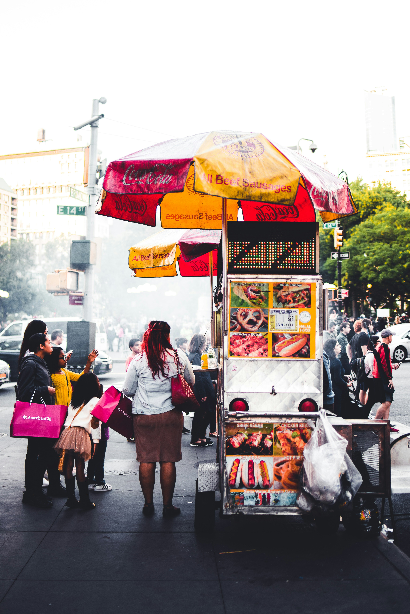
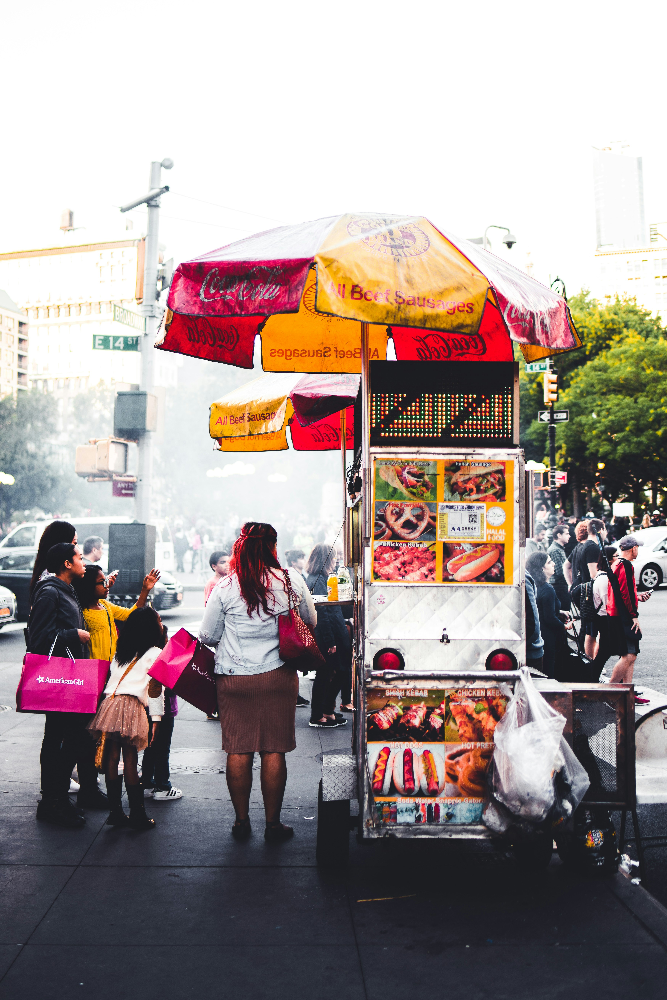

AMERICHE
Dai tacos messicani alle empanadas argentine, fino agli hot dog newyorkesi, il cibo di strada delle Americhe unisce sapori locali e influenze globali. Un viaggio gustoso tra culture diverse, tutte da assaporare… al volo!
 

STATI UNITI
Hot Dog
Il hot dog è forse il simbolo più riconoscibile dello street food americano.
Nato come versione semplificata del “frankfurter” tedesco, il hot dog consiste in un salsiccia di carne – solitamente di maiale, manzo o un mix – servita in un panino morbido e allungato. Spesso è guarnito con senape, ketchup, cipolle, relish, crauti o formaggio fuso.
È un cibo rapido, molto popolare nelle fiere, stadi e festival, simbolo della cultura popolare americana e della convivialità.
Pretzel
l pretzel americano, erede della tradizione tedesca, è un pane intrecciato e salato, cotto fino a diventare croccante fuori e morbido dentro.
Diffuso soprattutto nelle regioni con forte influenza tedesca, come la Pennsylvania, è uno snack perfetto da passeggio.
Spesso servito con senape o formaggi cremosi, è apprezzato per il suo sapore leggermente dolce e la croccantezza della crosta.
MESSICO
Tacos al Pastor
I tacos al pastor sono una delle specialità più iconiche del Messico, originari di Città del Messico ma ispirati dalla cucina mediorientale (doner kebab).
Si preparano con carne di maiale marinata in una miscela di spezie, peperoncino, ananas e aceto, cotta su uno spiedo verticale (trompo). La carne viene tagliata a fettine sottili e servita in piccole tortillas di mais, accompagnata da cipolla, coriandolo fresco e salsa piccante.
Il sapore è un perfetto equilibrio tra dolce, piccante e affumicato.

Elotes
L’elote è una classica merenda di strada messicana a base di pannocchia di mais cotta alla griglia o bollita, poi spalmata con maionese, formaggio grattugiato, lime, chili in polvere e sale.
È uno snack semplice ma molto saporito, perfetto per rinfrescarsi e apprezzare i sapori intensi della cucina di strada messicana.
ARGENTINA
Choripán
Il choripán è un classico panino argentino a base di chorizo (salsiccia di maiale speziata) grigliato e servito in un pane croccante tipo baguette o ciabatta.
Spesso viene accompagnato da chimichurri, una salsa a base di prezzemolo, aglio, aceto e spezie, che gli dona un sapore fresco e aromatico.
È uno street food molto popolare durante eventi sportivi o grigliate all’aperto, simbolo della cultura argentina.
Empanadas
Le empanadas sono fagottini di pasta ripieni, tipici di tutta l’America Latina e particolarmente radicati in Argentina.
I ripieni variano moltissimo, ma tra i più comuni ci sono carne macinata, cipolla, olive, uova sode e spezie.
Vengono cotte al forno o fritte, e rappresentano uno snack versatile e saporito, perfetto da consumare in ogni momento della giornata.
BRASILE
Acarajé
L’acarajé è uno street food tradizionale afro-brasiliano, originario dello stato di Bahia.
È fatto con fagioli mung sbucciati e macinati, che vengono fritti in olio di dendê (olio di palma) fino a diventare delle frittelle croccanti fuori e morbide dentro. Viene servito aperto e farcito con una salsa piccante a base di gamberi, cipolla e peperoncino.
È un piatto ricco di storia, legato alla cultura afro-brasiliana e spesso consumato durante feste e cerimonie.
Pastel
Il pastel è una sorta di fagottino fritto, con una pasta sottile e croccante, ripieno di carne, formaggio, pollo, o verdure.
È uno degli street food più amati nei mercati e nelle fiere brasiliane, semplice ma gustoso.
Le sue origini risalgono a influenze portoghesi e cinesi, e si è evoluto in una varietà di ripieni molto ampia e creativa.